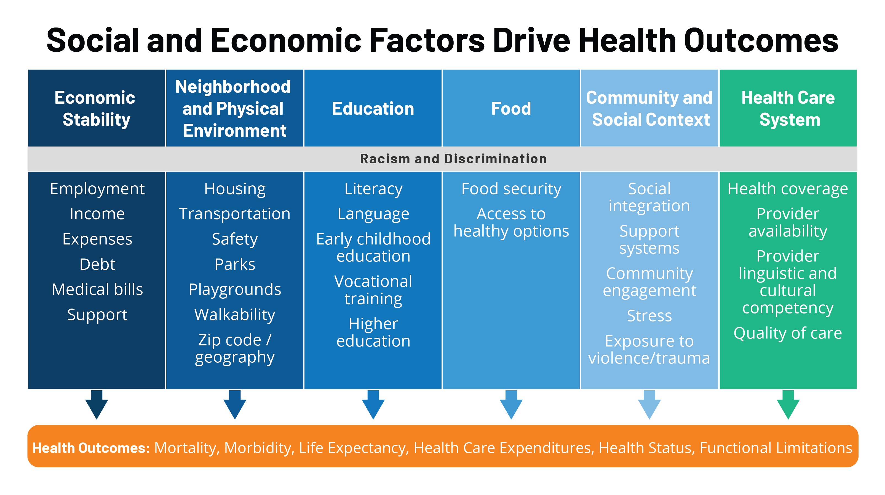
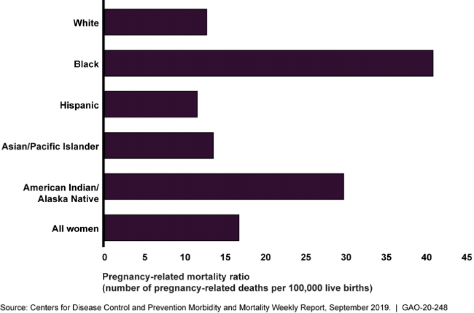
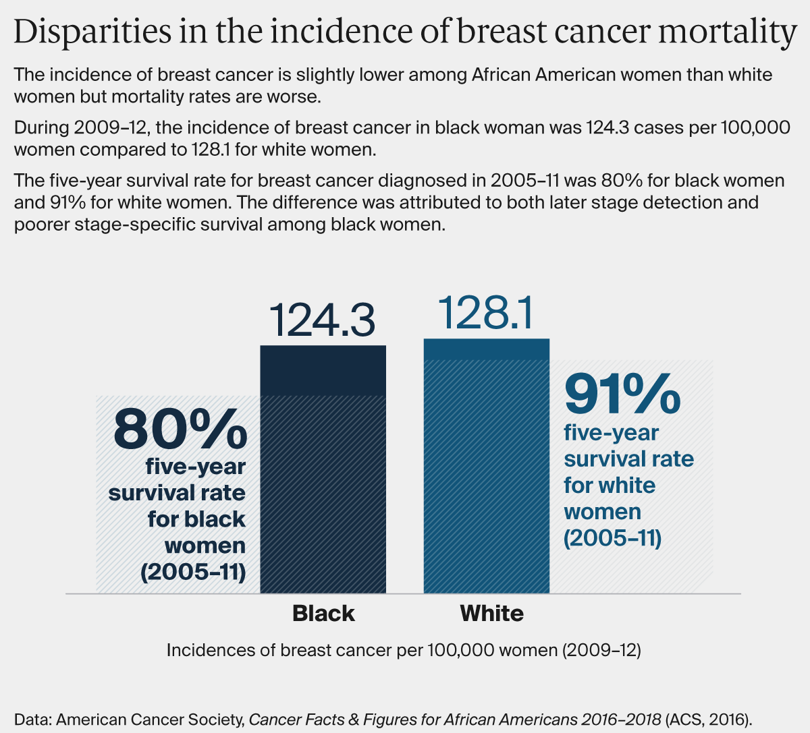

Even though health care is essential to health, studies show that health can have multiple factors such as underlying genetics, health behaviors, social and environmental.

The GAO(Government Accountably Office) reported that non-Hispanic Black women were more than 3 times more likely to pass away during childbirth than non-Hispanic white women. Some examples that factor into this issue can be access to good health care, lack of knowledge of pregnancy warning signs, or missing or delayed diagnoses.
